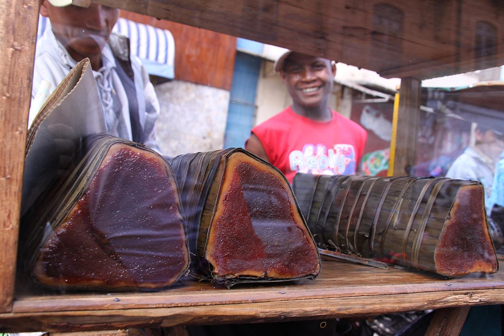
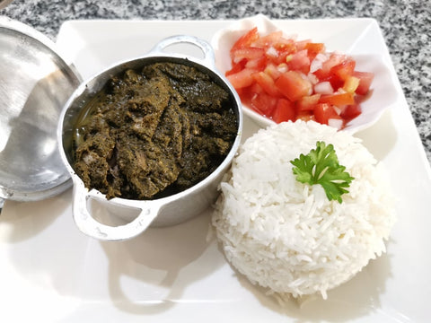
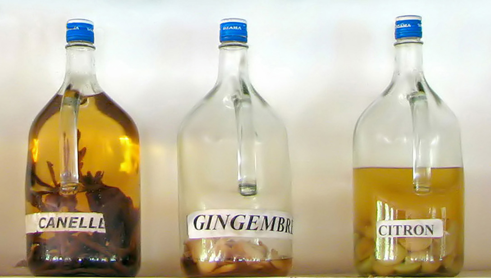
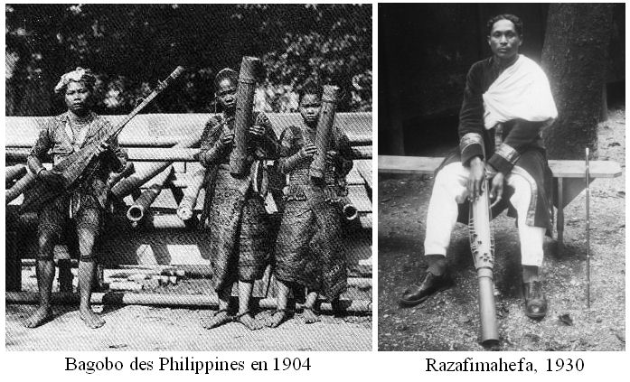
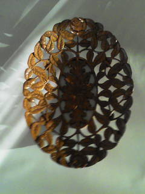
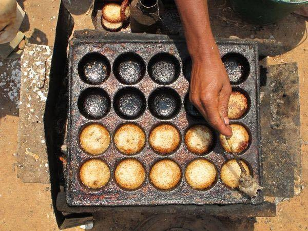
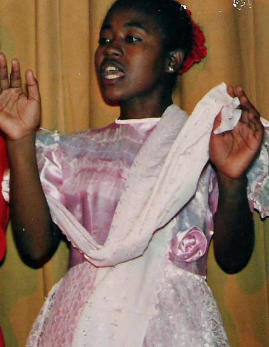
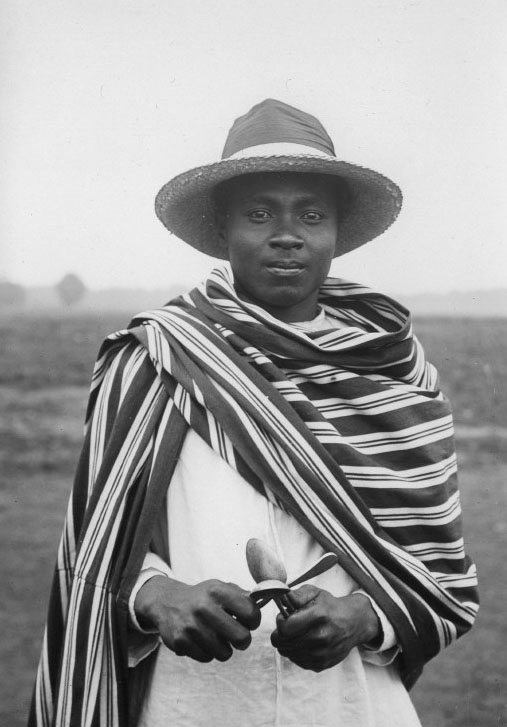

       
X
Kobandraviba
C'est un dessert a base de farine de riz gluant,banane et cacahuetes
Henankisoa sy Ravitoto
C'est le preferer des plupart des malgache, feuille de manioc et du porc ce qu'on appelle "laoka" pour manger avec du riz
Rhum arrange
Les gens local l'appelle "toaka gasy", c'est une preparatiom de rhum dans laquelle ont macere divers ingradients tels que des feuilles, des fruits,des graines, des ecorces ou des friandises
Valiha
C'est une variete de cithare tubulaire en bambou d'origine Indonesie
Litho dentelle en palissandre de Jean Chrysostome
Mofo Gasy
Ce sont des petits pain a base de farine de riz sucree versee dans des moules circulaires
Hira Gasy
Dite aussi Vakodrazana, c'est un spectacle populaire assimilable au theatre ou operette. compose demusique, de chants et de danses propres a la culture de hauts plateaux centraux de Madagascar
Lamba
La piece principale ou emblematique du costume traditionnel malgache, constitue d'une piece de coton ou de soie rectangulaire plus ou moins grande


_in_Madagascar.jpg)

.jpg)